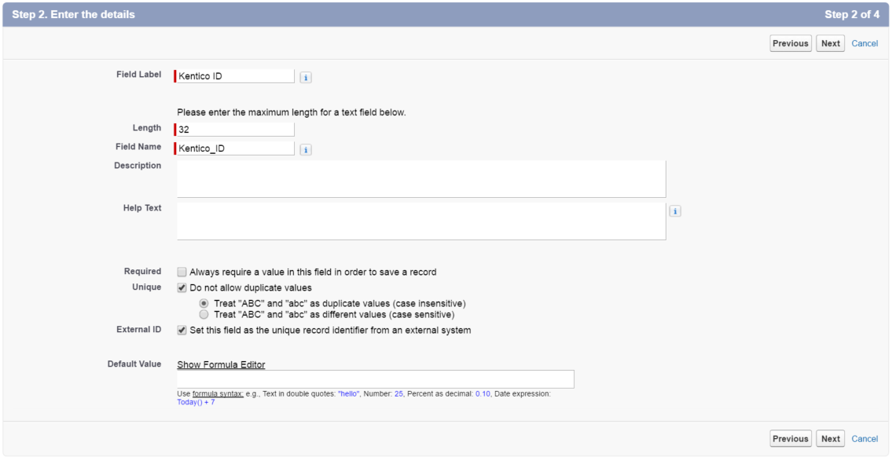

Configuring Salesforce integration
Feature retired in Kentico 11
Salesforce integration in Kentico 11 uses Salesforce SOAP API version 23.0, which is deprecated and will be retired in 2023. For more information, see the Salesforce Platform API Versions 21.0 through 30.0 Retirement article.
If you wish to use Salesforce integration, you need to upgrade to Kentico Xperience 13.
You can access the Salesforce integration configuration in the Settings application in Integration -> Salesforce.com. These settings allow you to authorize access to your Salesforce organization and modify how the system maps the attributes of Kentico contacts to leads in Salesforce.
Authorizing access to Salesforce
You need to authorize access of Kentico to your organization on behalf of a specific Salesforce user. This process requires you to generate a Consumer key and Consumer secret in Salesforce itself.
Prerequisite
To configure the Salesforce authorization, you need to have HTTPS set up for your website.
Additionally, your server (IIS) must support the TLS 1.1 protocol or newer. For more information, see the IIS documentation.
Click Authorize next to the Organization access setting.
An authorization dialog opens.
Log in to Salesforce.com.
Create a new remote access application in App Setup -> Create -> Apps.
In Connected Apps, click New.
Enter the following values for the remote access application:
Basic Information
Connected App Name: Type a name for the application. This name allows you to identify your application as the source of the request when authorizing access to your organization.
API Name: The application's name is filled in automatically.
Contact Email: Enter an email address where you want to be contacted.
API (Enable OAuth Settings)
Enable OAuth Settings: Select the check box.
Callback URL: Use the following format: https://www.example.com/CMSModules/ContactManagement/Pages/Tools/SalesForce/AuthorizationSetup.aspx
Use digital signatures: Do not select the check box. The Salesforce integration does not use digital signatures for logging in.
Select OAuth Scopes:
Perform requests on your behalf at any time (refresh_token, offline_access)
Full access (full)
Save the form and copy the Consumer Key and Consumer Secret provided by Salesforce for your remote access application.
Paste your consumer values into the corresponding fields in the Kentico authorization dialog and click Authorize.
A Salesforce login screen opens in the current window.
Log in and click Allow to grant permission to your Kentico application.
Security
The system uses the OAuth 2.0 protocol to authorize access to Salesforce. Your Salesforce login and password are never disclosed to Kentico. Access tokens are stored in encrypted format and the communication itself is encrypted using SSL.
Save the settings to finish the authorization process.
The Organization access section now shows the user and company name that the application uses to authorize access to Salesforce.
Kentico EMS required
Features described on this page require the Kentico EMS license.
Configuring the replication of contacts
Once the authorization is complete, you need to configure how the system replicates your contacts into Salesforce leads.
|
Replication of contacts into Salesforce leads |
|
|
Enabled |
Enables or disables replication of contacts into Salesforce leads. |
|
Keep Salesforce leads updated |
If checked, the replication process includes contacts that have already been replicated before. This ensures that the system updates the corresponding Salesforce leads based on the current contact data. If disabled, contacts are only replicated once. |
|
Mapping of contacts to SalesForce leads |
Determines how contact fields are mapped to the fields of Salesforce leads. See the Mapping contacts to Salesforce leads section below for details. |
|
Batch size |
Applications can only make a limited number of API calls to Salesforce within a 24 hour window, so the replication process handles contacts in batches. Each batch is processed using one API call. The Batch size setting specifies the maximum number of contacts that the system replicates in a single batch. |
|
Score |
Allows you to select the score that determines which contacts are replicated. The system only replicates contacts that reach a certain value in the given score (specified via the Minimum number of points for replication setting). If you do not choose a score (None), the system replicates all contacts. To learn more about scoring, refer to the Scoring contacts chapter. |
|
Minimum number of points for replication |
Specifies the amount of points that contacts must reach in the score selected through the Score setting. Once a contact reaches this value, the system marks it for replication as a Salesforce lead. |
|
Lead description |
Defines a custom description for replicated contacts. To map the description to a specific field of Salesforce leads, select the Generated lead description source in the field mappings. You can insert the values of contact fields into the description using macro expressions. The default description adds the Last name of the contact that is being replicated: {% Contact.ContactLastName %}For example, to use the Business phone value instead of the last name, enter the following expression: Â {% Contact.ContactBusinessPhone %} |
|
Default company name |
All Salesforce leads require a company name value. This setting allows you to specify a default company name, which the replication process uses for contacts who are not associated with any company. The system attempts to retrieve the company name value from sources in Kentico in the following order:
|
Mapping contact fields to Salesforce lead fields
The replication process transfers data from Kentico contacts to Salesforce leads based on field mapping settings.
Note: You need to authorize Organization access before you can adjust the field mappings.
Preparing the Salesforce mapping identifier field
Kentico stores the bindings between Salesforce leads and contacts in a custom Salesforce field. You need to create a dedicated field for your Salesforce leads for this purpose.
Log in to Salesforce.com.
Navigate to App Setup -> Customize -> Leads -> Fields.
Click New in the Lead Custom Fields & Relationships section.
Choose Text as the field type and click Next.
In the Enter the details step, fill in the following values:
Field Label: type any label for the field, for example: Kentico ID
Length: 32
Field Name: type any name for the field, for example: Kentico_ID
Unique: select the check box
Select Treat "ABC" and "abc" as duplicate values (case insensitive).
External ID: select the check box

Fill in the rest of the information as required and finish the New Custom Field wizard.
In Kentico, go to Settings -> Integration -> Salesforce.com and click Edit below the Mapping of contacts to Salesforce leads section.
Select your new Salesforce lead field as the External identifier field.
Click OK and Save the settings.
You can now configure the mappings between the fields of Kentico contacts and Salesforce leads.
Setting up the field mappings
To access the field mapping dialog, go to Settings -> Integration -> Salesforce.com and click Edit below the Mapping of contacts to Salesforce leads section.
The mapping dialog offers a list of all standard and custom fields defined for your Salesforce leads. You can select sources for the fields from the following sections:
Field – the fields of Kentico contacts. Only fields containing relevant data are available (internal system fields of contacts are hidden).
Custom – related values that cannot be loaded directly from contact fields, including the following:
Company name – ensures that each contact has a company name value. See the description of the Default company name setting for details about the process.
Generated lead description – loads the value of the Lead description setting.
Country name – provides the name of the contact's country as a text value.
State name – provides the name of the contact's state as a text value.
Picklist entry – allows you to select from the values predefined in Salesforce for picklist type fields.
You can only select contact fields that fit the data type of the target Salesforce field. The following table shows which types of Kentico fields are supported by the available Salesforce data types:
|
Salesforce Data type |
Supported Kentico field data types |
|
Checkbox |
Boolean (Yes/No) |
|
Currency |
Replication does not support the Currency data type at this time. |
|
Date |
Date and time |
|
Date/Time |
Date and time |
|
|
Text, Long text |
|
Number |
Decimal number, Floating point number, Integer number, Long integer number |
|
Percent |
Decimal number, Floating point number, Integer number, Long integer number |
|
Phone |
Text, Long text |
|
Picklist |
Text, Long text |
|
Picklist (Multi-Select) |
Text, Long text |
|
Text |
Text, Long text |
|
Text Area |
Text, Long text |
|
Text (Encrypted) |
Text, Long text |
|
URL |
Text, Long text |
Note
The system may modify values during the replication process according to the parameters of the target fields in Salesforce.
Text values – the replication process may shorten long text values (strings) to fit the maximum length of the target field.
Decimal numbers – the fractional part of decimal numbers may be truncated based on the data type settings of the target field. For example, the number 2.45397 could be shortened to 2.45. The same also applies to Floating point numbers.
Large numbers – replication of large numbers may result in an error if the target field has an insufficient length. Such errors block the related contact from replication until the contact's values are updated, or the field mapping settings change.
Once you configure all field mappings as required, you can start Replicating contacts to Salesforce.
Optimizing performance
By default, the Kentico on-line marketing features are optimized for the most common configurations (with Salesforce integration disabled). If you are using the Salesforce integration with a large number of contacts, we recommend that you optimize database operations by manually creating a database index with the following columns on the OM_Contact table:
ContactSalesForceLeadID
ContactSalesForceLeadReplicationDisabled
ContactSalesForceLeadReplicationSuspensionDateTime
The index should be non-clustered and non-unique. See the Create Nonclustered Indexes article for more information.